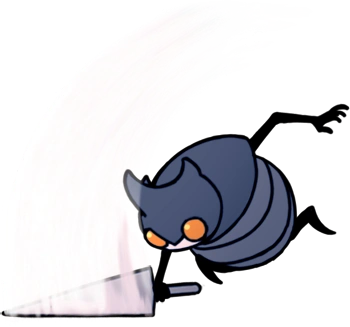
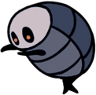

Voies d’Eau Royales
Une région qui est série de canalisations d'eaux usées et de structures de soutien sous la Cité des Larmes.
Carte
Lore
Les tuyaux des Voies d'Eau Royales ont été construits pour transporter les déchets de la capitale. Cependant, la pluie incessante dans la ville haute a nettoyé les tuyaux. Tous les déchets transportés par l'eau finissent dans la Fosse à Ordures. Avec la ruine du royaume, les Flukes ont établi une colonie dans les profondeurs des Voies d'Eau Royales et ont peuplé la zone avec d'autres créatures.
Connexions
Les Voies d’Eau Royales sont reliées à ces zones :
Ennemis
-
Belfly

Une créature possédant de fines ailes qui dissimulent un ventre très instable. Elles sonneront leur propre vie pour protéger leur territoire. Une créature coléreuse sans égard pour sa propre vie. Une créature qui ne connait pas la peur... peut-on vraiment l'appeler "proie" ?
-
Bluggsac

Une créature calme, mais putride. Elle porte des oeufs rances sans ses intestins. Ces créatures se repèrent facilement si vous avez un bon sens de l'odorat. Si vous trouvez l'un de ses oeufs, je vous conseille vivement de ne pas les manger.
-
Flukefey
La créature la plus jeune de son espèce. Son corps est composé de dents, d'ailes et d'un ventre. Semble vouloir attaquer tout ce qui bouge avec ses dents pointues. Cependant, cette créature n'attaquera pas ses semblables, ce qui indique qu'elle possède encore une once d'intelligence.
-
Flukemon
Une sorte de ver. Préfère un habitat humide et sombre. Ce sont des ennemis dangereux et imprévisibles. Ils infestent les tuyaux situés sous la capitae d'Hallownest. Restez sur vos gardes mêmes après les avoir tués.
-
Sentinelle Armée
La carapace vide d'une grande sentinelle d'Hallownest, animée par une force étrange. Une des rares créatures dans tout Hallownest assez fortes pour manier un estraguillon. Les insectes d'Hallownest sont tellement pitoyables. Ils ont eu beaucoup de chance d'avoir été infectés par des champignons toxiques, car cela augmente leurs chances de survie ! Ce sont vraiment des créatures complètement absurdes.
-
Carcasse Malmeneuse

La carapace vide d'un insecte, animé par une force étrange. Attaque férocement toutes les créatures sur son chemin qui ne sont pas infectées. Ces corps sans vie ambulants sont remplis d'une brume orange épaisse. Ça a un goût un peu sucré et maladif. C'était vraiment immonde. Je vous conseillerais de ne pas les manger après les avoir.
-
Carcasse Cornue

La carapace vide d'un insecte, animé par une force étrange. Utilise sa longue corne pour attaquer toutes les créatures sur son chemin qui ne sont pas infectées. Même après leur mort, ces insectes sont tellement arrogants. Ils sont beaucoup trop fiers de leur longue corne ! J'aime bien la leur arracher.
-
Sentinelle Vide
La carapace vide d’une sentinelle d’Hallownest, animée par une force étrange. Possède encore quelques bribes de souvenirs de son ancienne vie. Plus habiles au combat que la plupart des insectes d’Hallownest, ces créatures savent comment s’adapter à toutes sortes de situations. Cependant, elles possèdent une carapace légère. Maintenez-les sous pression !
-
Hwurmp
Une créature minuscule et calme. Lorsqu'elle se sent menacée, elle gonfle son corps jusqu'à avoir une taille énorme. Une créature extrênement amusante..
-
Sentinelle à l’aiguillon long

La carapace vide d'une grande sentinelle d'Hallownest, maniant un aiguillon long. Charge l'ennemi avec son arme redoutable ou la lance à distance. La plupart du temps, cet ennemi sournois gardera ses distances et tentera de vous abattre avec son arme de jet. Attendez que cette créature vous charge, puis sautez au-dessus d'elle et frappez là en effectuant une attaque vers le bas.
-
Pilflip
Une créature étrange qui s'adapte à toutes les situations. Bascule sur le dos pour utiliser ses autres membres. C'est une technique de survie essentielle de savoir s'adapter avec souplesse face à toutes sortes de situations. Si un problème semble insurmontable, essayez de le regarder sous un angle différent.
-
Carcasse Vagabonde
La carapace vide d'un insecte, animé par une force étrange. Erre sur les routes où elle vivait autrefois. Ces insectes "civilisés" d'Hallownest étaient faibles de leur vivant et ils sont tout aussi faibles après leur mort. Réduisez-les à l'état de poussière !
-
Sentinelle Ailée

Une sentinelle ailée d’Hallownest. Patrouille dans les hauteurs d’une caverne immense à partir de laquelle la ville a été construite. Virevoltent dans les airs en restant hors de portée, jusqu’à ce qu’elle repère un point faible dans la défense de l’ennemi. C’est à ce moment qu’elles fondent sur l’ennemi pour porter un coup décisif. Si vous êtes assez confiant dans vos aptitudes de combat, attendez qu’elles viennent à vous pour contre-attaquer.
-
Bulling
Ballon fongique passif. Les gaz internes le font flotter. Enfant, il dérive les yeux fermés et l'esprit ouvert. Quand j'étais jeune, mes frères et sœurs et moi nous chassions les uns les autres dans le nid. Maintenant, je chasse seul.
-
Bullboon

Bulle fongique mature. Elle crache le gaz qu'elle a accumulé dans son corps sur les ennemis. Tellement rondes. Je n'ai jamais vu de créatures si rondes. Ce monde doit encore cacher des créatures incroyables quelque part. Je dois réussir à toutes les trouver !
-
Grimm Cauchemardesque

Esprit cauchemardesque terrifiant de la Troupe de Grimm. Dans le cadre du Rituel, il rassemble des flammes écarlates avec sa torche. Il abandonnera la flamme une fois vaincu. Dansez et mourez et vivez à jamais, Des voix silencieuses crient et chantent, Présentez-vous devant le cœur sombre de la Troupe, Brûlez le Roi des cauchemars.
-
Flukemunga
Vieux Fluke engraissé grâce aux riches déchets présents dans les tuyaux sous la capitale. Quand les prédateurs mangent trop, l’excès de nourriture qu’ils mangent devient une masse molle qui enveloppe leur corps. Au moins, ces créatures peuvent faire bon usage de leur surpoids.
Boss de la Zone
Défenseur Bousier
Le Défenseur Bousier était connu sous le nom de Ogrim, le plus fidèle des Cinq Grands Chevaliers d'Hallownest. En tant que tel, il a participé à de nombreuses batailles et aventures. Il était également réputé pour sa mauvaise odeur, même si cela ne l'a pas empêché de profiter de la compagnie de la Dame Blanche et de ses camarades chevaliers. Il aimait particulièrement la chevalière Isma. Ogrim a survécu à l'infection mais s'est isolé dans une partie des Voies d’Eau Royales où les déchets se rassemblent. Là, en tant que Défenseur Bousier, il garde la commande de la pompe qui permet l'entrée au Bosquet d'Isma de l'autre côté des égouts. Le Défenseur Bousier défie quiconque entrerait sur place pour le défier. Il passe aussi le temps en faisant rouler des excréments et en moulant des statues. Le Défenseur Bousier ne semble pas au courant du sort du Roi Pâle et des autres chevaliers. Dans son isolement, il se trompe en pensant qu'ils reviendront et que Hallownest peut renaître.
Flukemarm

Flukemarm est la génitrice des Flukes infestant les Voies d’Eau Royales. Son corps sert de nid aux jeunes Flukefeys. Elle est infectée et hostile tout comme sa progéniture, mais son rôle de pondeuse au sein de la colonie l'empêche de quitter sa grotte.
Protecteur Blanc
C'est la forme éveillé du Défenseur Bousier, au sommet de sa gloire passée.
Évènements
- Obtention de la Larme d'Isma
- Obtention d'un morceau de masque
- Accès a la Fosse à Ordures
- Accès au Bosquet d'Isma
- Accès au Panthéon des Dieux (DLC)
- Rencontre du marchand Tuk
- Rencontre de la Chercheuse de Dieux (DLC)